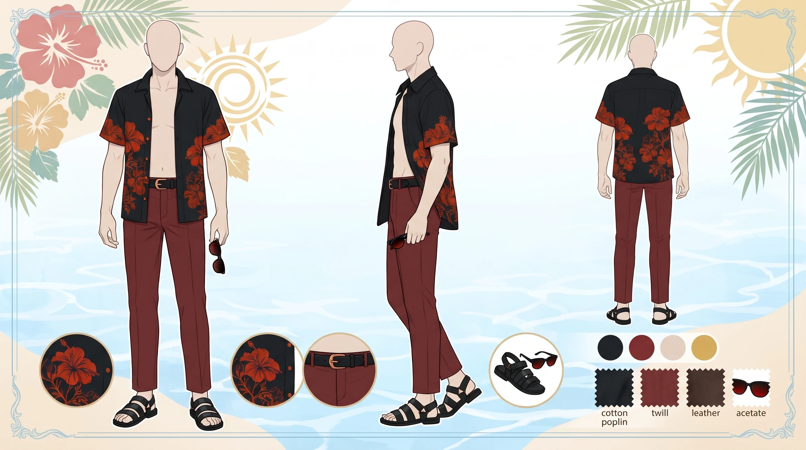
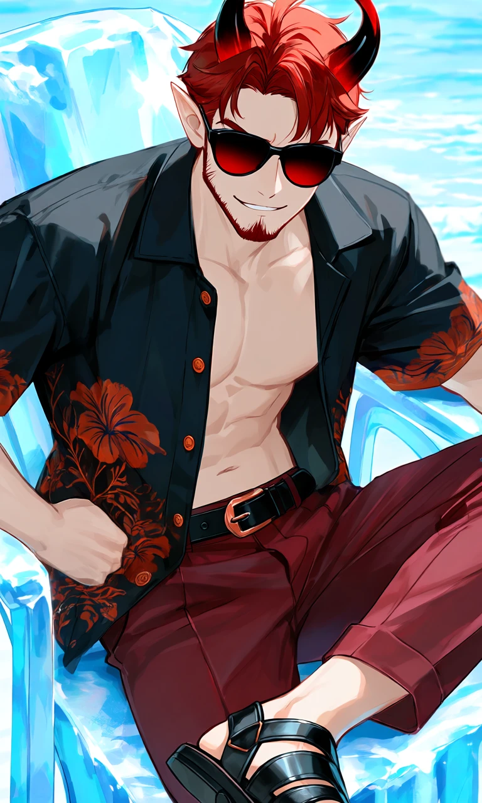

Hibiscus Afterglow

Outfit Prompt
A short-sleeved black linen resort shirt with a wide camp collar, warm copper buttons, and subtle ember-red hibiscus embroidery along the lower hem and sleeve cuffs. The shirt is worn completely unbuttoned from collar to hem, with bare chest and abdomen visible. Deep oxblood pleated trousers in lightweight linen, cut straight through the leg and cuffed above the ankle. A black leather belt with a brushed copper buckle, black leather slide sandals, and black-to-red ombré sunglasses complete the outfit.
Outfit Examples

